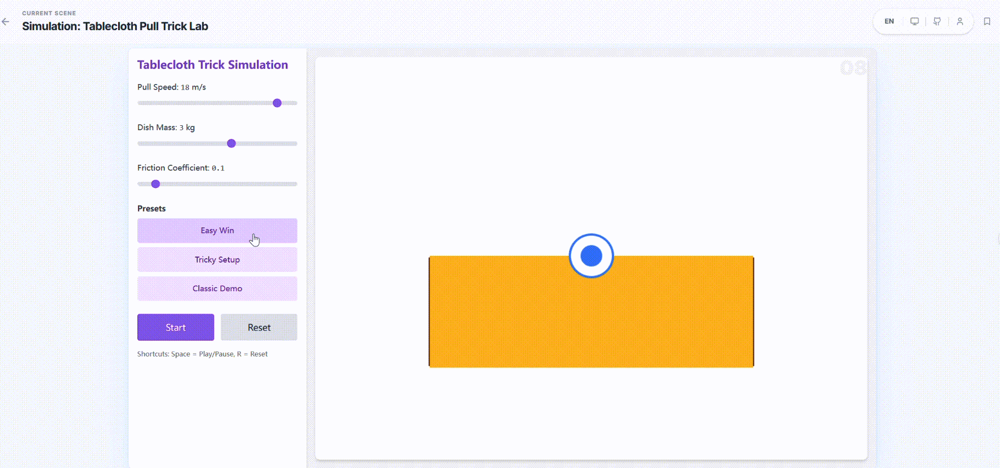

Learning Playground · Tool guide
OpenMAIC
See how a classroom generator turns a learning objective into scenes. Our KV-cache trial produced a calculator and a quiz that you can work through here.
Work the memory problem
The example holds the model size fixed so you can isolate two choices a serving system makes. Each cached token has a key and a value per KV head at each layer. The model has 32 layers, 32 query heads, 128 numbers per head, and uses two bytes per number.
- Make a baseline. In the calculator, choose MHA (32 KV) and set the sequence length to 4,096. The storage calculation gives 2 GiB. Query heads describe who reads the cache. The KV head count tells you how many sets the model stores.
- Share a set of entries. Choose GQA (8 KV). Confirm that the sequence still has 4,096 tokens. Four query heads share each KV head, so the answer falls to 512 MiB. MQA (1 KV) gives 64 MiB.
- Change the other factor. Choose the 8-head preset again, predict the result at 8,192 tokens, and set the token count. Keeping twice as many entries takes 1 GiB. Read the formula above the controls to see both factors.
- Connect storage to attention. In the lesson, open Work one attention row. The same two values produce different outputs under two queries. Then choose an answer in Test yourself and open its explanation.
Inside a classroom
- Generation
- A topic or source material becomes a classroom outline. Scenes can contain slides, assessments, browser simulations, or project-based tasks. An outline lets a caller select a single scene type and keep its purpose explicit.
- Playback and participation
- A generated course has a playback state, teacher actions, and places for the learner to intervene. The full application supports classroom discussion, teacher and student agents, a whiteboard, and speech when its providers are configured.
- Editing and reuse
- The application includes a slide editor and course persistence. The generation SDK can be called independently if the deliverable is a scene for an existing course.

From outline to scene
Scene outline SDK prompt Model reply Scene parser Rendered content
The published @openmaic/generation package loads templates and snippets for each scene type. The caller supplies a model callback. For an interactive scene, the SDK extracts HTML from the reply, checks script syntax, and post-processes supported libraries. For a quiz, it parses structured question data. The full app can also generate scene actions and assemble content and actions into its course format.
Syntax checks made the simulator loadable. They could not detect that its preset buttons reset the values the learner had chosen. Testing a generated control in the browser caught that defect. SDK contracts · Scene generator.
Generate a fresh scene
In a checkout of this playground, install Git, Node.js 22.19 or newer, npm, and curl. For the recorded model settings, start Ollama and make qwen3.5:35b available first. Run these commands from the playground root. The model call requires sufficient memory for that model.
./install.sh openmaic
run=topics/how-transformers-remember/cases/one-more-token/runs/2026-11-23-openmaic
tmp=$(mktemp -d)
node tools/openmaic/scene.mjs request "$run/scene-outline.json" > "$tmp/request.json"
curl --fail-with-body -sS -H 'Content-Type: application/json' \
--data-binary @"$tmp/request.json" http://localhost:11434/api/chat -o "$tmp/reply.json"
node tools/openmaic/scene.mjs render "$run/scene-outline.json" "$tmp/reply.json" > "$tmp/replay.html"
echo "$tmp/replay.html"Open the printed file in a browser and test the presets. To generate questions, use quiz-outline.json for both outline arguments and write to replay-quiz.json. Expect a new model answer. To compare with the saved inputs and output, inspect the scene outline, quiz outline and original questions.
What happened in the trial
On November 23–24, 2026, the official scene generator (SDK 0.3.34, OpenMAIC checkout 1.5.0) made two calls to local Qwen. Both used temperature 0.2, seed 42 and a 16,384-token context. The first returned a working memory formula and prediction exercise. The second returned four questions, each with its correct answer first.
The playground repaired the calculator’s preset handlers, initialization and English captions. It varied the quiz option order, clarified distractors, and added the worked attention calculation and historical walkthrough that generation omitted. Docker Compose validated the full classroom configuration, but access to the Docker socket blocked startup. Classroom agents, live chat, and speech remain untested.
The learner named OpenMAIC, DeepTutor and Teachable Code as favorites on November 24, 2026. They also asked for English throughout. The specific OpenMAIC feature behind the preference and a numerical rating are still open. Read the trial record.